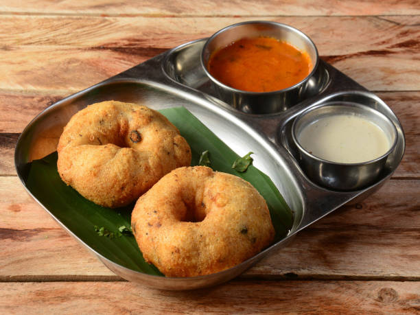

Delicious Medu Vada

Medu Vada is a popular South Indian snack made from urad dal (split black gram). It's crispy on the outside and soft on the inside. Here's how you can make it at home:
Ingredients:
- For the Batter:
- 1 cup urad dal (soaked for 4-5 hours)
- Salt to taste
- 1 small onion, finely chopped (optional)
- 1 sprig curry leaves, chopped
- 1-inch piece ginger, finely chopped
- 1-2 green chilies, finely chopped
- Water as needed
- For Frying:
Instructions:
-
Soaking and Grinding:
- Soak urad dal for 4-5 hours. Drain the water.
- Grind the soaked urad dal with minimal water until it becomes light and fluffy. The batter should be thick.
-
Preparing the Batter:
- Add salt, finely chopped onions, curry leaves, ginger, and green chilies to the batter. Mix well.
- Beat the batter for 3-4 minutes to incorporate air, which helps in making crispy vadas.
-
Shaping the Vadas:
- Wet your fingers, take a portion of the batter, and shape it into a doughnut with a hole in the center.
- Make sure the hole is large enough to ensure even frying.
-
Frying the Vadas:
- Heat oil in a pan over medium heat.
- Carefully drop the shaped vadas into the hot oil and fry them until they turn golden brown and crisp.
- Fry on both sides for even crispiness.
-
Serving:
- Remove the vadas from the oil and drain excess oil on a paper towel.
- Serve the crispy Medu Vadas with coconut chutney and sambar.
Enjoy!
Enjoy your crispy, soft, and flavorful Medu Vadas with your favorite chutneys and sambar! 😊